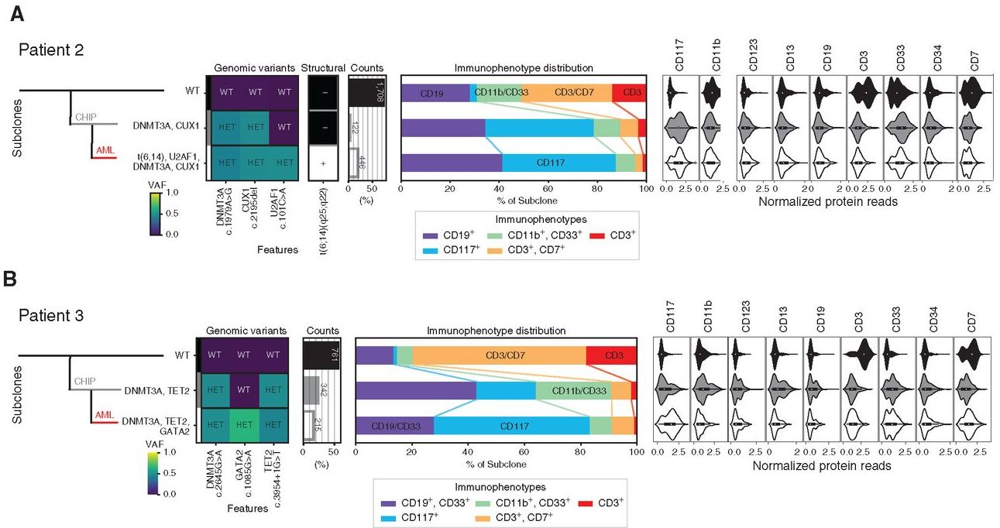

List of Publications
Below are published articles and journals. Included with each publication—a view of the original source publication, list of publication citations used in other works, and a download for each publication in PDF format.


Additional Information
- Associated Editorial: The double-edged sword of AlloHCT for SCD. Blood 135(14). pp.1083-1085.oPublished with an associated editorial
- Study made it into clinical standard of care guidelines for sickle cell disease stem cell transplantation: Publication
- Overall paper notable for studying patients who developed AML from well-known bluebird bio trial. Seenews article feaeturing our work: Publication
Additional Information
- Invented and characterized 12 Novel Inorganic Compounds as undergrad which was published in top Inorganic Chemistry Journal(the “Blood” of Inorganic Chemistry)—according to Chemistry Department Head “and unheard-of feat”
Additional Information
- Follow-up to below paper characterizing mechanism of elusive C-H activation mechanism that the inorganic compounds I developed (again below) could perform. Again, in the top Inorganic Chemistry Journal, and invited by Journal to submit cover-art for issue

Additional Information
- Published as Rapid Communication “Practice Changing”
- Web of Science“Highly Cited Paper”
- Most cited 2020 paper in topic “AML” per Web of Science (WOS)
- Second most cited 2020 paper in topic “hematopoietic cell transplantation
- Recognized as one of the top accomplishments of the NIH in 2020
Additional Information
- Pinnacle of the collaboration I helped lead with biotech start up Mission Bio
A Novel Proteomic Profiling of the Bone Marrow Microenvironment Reveals Elevated Levels of the Chemokine CCL23 Isoforms in Acute Myeloid Leukemia
H Celik, KE Lindblad, B Popescu, G Fantoni, G Gui, J Valdez, M Goswami, J Ghannam, ... Blood, The Journal of the American Society of Hematology 134, 2709-2709
1 citations

Personalized Single-Cell Proteogenomics to Distinguish Acute Myeloid Leukemia from Nonmalignant Clonal Hematopoiesis
LW Dillon*, J Ghannam*, C Nosiri*, G Gui, M Goswami, KR Calvo, ...
Blood Cancer Discovery 2, 1-7
Newly Published